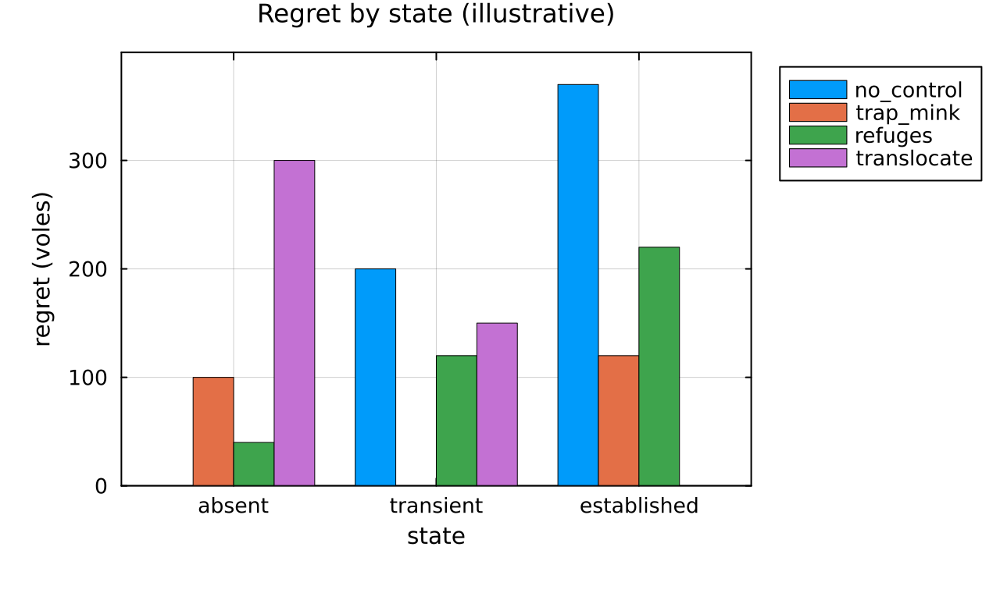
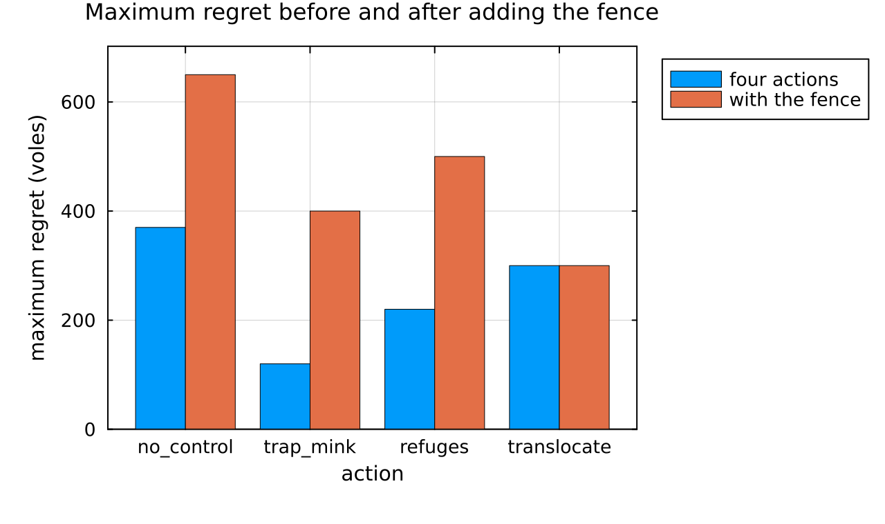

Regret
Simon Frost
- Motivation
- The problem
- The regret table
- Maximum and expected regret
- Expected regret and the value of perfect information
- Relative regret
- The menu-dependence of minimax regret
- What to take away
- Next
Motivation
Regret measures an action against the best that could have been done had the state been known. It turns a payoff table into a table of shortfalls. Two summaries of that table are in common use: the expected regret, which turns out to be the value of perfect information in another guise, and the maximum regret, which the minimax-regret rule minimises. This vignette computes both, shows the identity with the expected value of perfect information (EVPI), and shows the main caveat of minimax regret: the choice can change when an action that is never chosen is added to the menu.
The problem
The problem is the one of the previous vignette: a colony of water voles on a river that American mink may reach. Outcomes are the number of water voles alive in five years. All numbers are illustrative.
using DecisionAnalysis
include(joinpath("..", "_common.jl"))
actions = [:no_control, :trap_mink, :refuges, :translocate]
states = [:absent, :transient, :established]
payoff = PayoffTable(actions, states,
[800 400 50; 700 600 300; 760 480 200; 500 450 420])
problem = DecisionProblem(payoff, [7 // 10, 1 // 5, 1 // 10]; baseline=:no_control)
payoffPayoffTable{Int64}: 4 actions × 3 states
| action | absent | transient | established |
|---|---|---|---|
no_control | 800 | 400 | 50 |
trap_mink | 700 | 600 | 300 |
refuges | 760 | 480 | 200 |
translocate | 500 | 450 | 420 |
The regret table
The regret of action a in state θ is the best payoff in that state minus the payoff of a: R[a, θ] = max over a′ of Q[a′, θ] − Q[a, θ]. Every entry is zero or positive and every column has a zero, at the action that is best for that state.
R = regret_table(problem)RegretTable{Int64}: regret, 4 actions × 3 states
| action | absent | transient | established |
|---|---|---|---|
no_control | 0 | 200 | 370 |
trap_mink | 100 | 0 | 120 |
refuges | 40 | 120 | 220 |
translocate | 300 | 150 | 0 |
Reading the first row: with no mink, no control is the best action and has no regret. With transient mink it is 200 voles behind trapping, and with established mink 370 voles behind translocation.
png_figure(grouped_bars(states, feasible_actions(problem), permutedims(R);
xlabel="state", ylabel="regret (voles)",
title="Regret by state (illustrative)"))
Maximum and expected regret
md_table(["action", "maximum regret", "expected regret", "expected voles",
"expected gain over no control"],
[[a, m, e, u, g]
for (a, m, e, u, g) in zip(feasible_actions(problem), max_regret(problem),
expected_regret(problem),
aggregate(Expectation(), problem),
expected_gain_over_baseline(problem))])| action | maximum regret | expected regret | expected voles | expected gain over no control |
|---|---|---|---|---|
no_control | 370 | 77 | 645 | 0 |
trap_mink | 120 | 82 | 640 | -5 |
refuges | 220 | 74 | 648 | 3 |
translocate | 300 | 240 | 482 | -163 |
MinimaxRegret() picks the action with the smallest maximum regret, and it differs from the action with the smallest expected regret.
first_choice(decide(problem, MinimaxRegret())),
first_choice(decide(problem, DecisionRule(Expectation(); transform=RegretTransform())))(:trap_mink, :refuges)Expected regret and the value of perfect information
Add the expected voles and the expected regret in any row of the table above. The sum is the same for every action:
aggregate(Expectation(), problem) .+ expected_regret(problem)4-element Vector{Rational{Int64}}:
722
722
722
722That constant is the expected number of voles for a manager who learns the state before choosing, the probability-weighted sum of the column maxima. So ranking actions by expected regret (smallest first) is the same as ranking them by expected utility (largest first), and the smallest expected regret is what is lost by having to choose without knowing the state. That loss is the expected value of perfect information.
minimum(expected_regret(problem)), evpi(problem)(74//1, 74//1)minimum(expected_regret(problem)) == evpi(problem)trueThe identity is exact here because the inputs are integers and rationals. Learning whether mink will be absent, transient or established before acting would be worth 74 voles in expectation. No survey of mink, however good, can be worth more than that to this decision. Later vignettes price real, imperfect information against this ceiling.
Regret is unchanged when the same number is subtracted from every action in a state. In particular, the table of gains over the baseline has the same regret table and the same EVPI as the original.
gains = gain_over_baseline(problem)
regret_table(gains) == R,
evpi(DecisionProblem(gains, problem.belief)) == evpi(problem)(true, true)Relative regret
relative_regret_table divides each column by its best payoff, which reads regret as a share of what was achievable. Unlike regret it changes if a constant is added to the payoffs.
relative_regret_table(problem)RegretTable{Float64}: relative regret, 4 actions × 3 states
| action | absent | transient | established |
|---|---|---|---|
no_control | 0.0 | 0.333333 | 0.880952 |
trap_mink | 0.125 | 0.0 | 0.285714 |
refuges | 0.05 | 0.2 | 0.52381 |
translocate | 0.375 | 0.25 | 0.0 |
first_choice(decide(problem,
DecisionRule(WorstCase(); transform=RelativeRegretTransform()))):trap_minkThe menu-dependence of minimax regret
Regret is measured against the best action available in each state, so it depends on which actions are on the table. Suppose a fifth action is proposed: a mink-proof fence around the core of the colony. It protects well if mink establish and does poorly otherwise, because it cuts the colony off from the rest of the river.
bigger = PayoffTable(vcat(actions, :fence), states, vcat(payoff.Q, [300 300 700]))
problem5 = DecisionProblem(bigger, problem.belief; baseline=:no_control)
biggerPayoffTable{Int64}: 5 actions × 3 states
| action | absent | transient | established |
|---|---|---|---|
no_control | 800 | 400 | 50 |
trap_mink | 700 | 600 | 300 |
refuges | 760 | 480 | 200 |
translocate | 500 | 450 | 420 |
fence | 300 | 300 | 700 |
before = decide(problem, MinimaxRegret())
after = decide(problem5, MinimaxRegret())
md_table(["action", "maximum regret, four actions", "maximum regret, with the fence"],
[[a, i <= 4 ? before.scores[i] : "", after.scores[i]]
for (i, a) in enumerate(feasible_actions(problem5))])| action | maximum regret, four actions | maximum regret, with the fence |
|---|---|---|
no_control | 370 | 650 |
trap_mink | 120 | 400 |
refuges | 220 | 500 |
translocate | 300 | 300 |
fence | 500 |
first_choice(before), first_choice(after)(:trap_mink, :translocate)The fence is not chosen. Its own maximum regret is 500. But it raises the best payoff under established mink from 420 to 700, which adds 280 to the regret of every other action in that state, and the recommendation moves from trapping to translocation. Choosing between trapping and translocation has come to depend on an option that neither rule recommends. This is a failure of the independence of irrelevant alternatives, and it is a property of the rule, not of this table.
The result of a regret-based rule carries this warning with it, and displays it under its scores:
afterDecisionResult: MinimaxRegret (lower is better)
| action | score | chosen |
|---|---|---|
no_control | 650 | - |
trap_mink | 400 | - |
refuges | 500 | - |
translocate | 300 | yes |
fence | 500 | - |
First choice: translocate
Note: Regret is measured against the best feasible action in each state, so this rule depends on the menu of actions: adding or removing an action, even one that is never chosen, can change the choice (independence of irrelevant alternatives fails).
Expected utility does not behave like this. An action’s expected payoff does not depend on the other rows, so adding the fence leaves the choice where it was.
first_choice(decide(problem, MaxExpectedUtility())),
first_choice(decide(problem5, MaxExpectedUtility()))(:refuges, :refuges)png_figure(grouped_bars(feasible_actions(problem),
["four actions", "with the fence"],
hcat(before.scores, after.scores[1:4]);
xlabel="action", ylabel="maximum regret (voles)",
title="Maximum regret before and after adding the fence"))
What to take away
regret_tablegives the shortfall of each action from the best action for each state.max_regretandexpected_regretsummarise it by action.- Expected utility plus expected regret is the same for every action. Minimising expected regret is therefore maximising expected utility.
- The smallest expected regret equals
evpi(problem): here 74 voles, the most that any information about the state can be worth. - Regret, and so EVPI, is the same whether payoffs are raw counts or gains over the no-intervention baseline.
- Minimax regret depends on the menu. Adding an action that is never chosen changed the recommendation from trapping to translocation. State the set of actions when reporting a minimax-regret choice.
Next
Experiments and the value of sample information replaces perfect information by a real diagnostic test and asks what its result is worth.